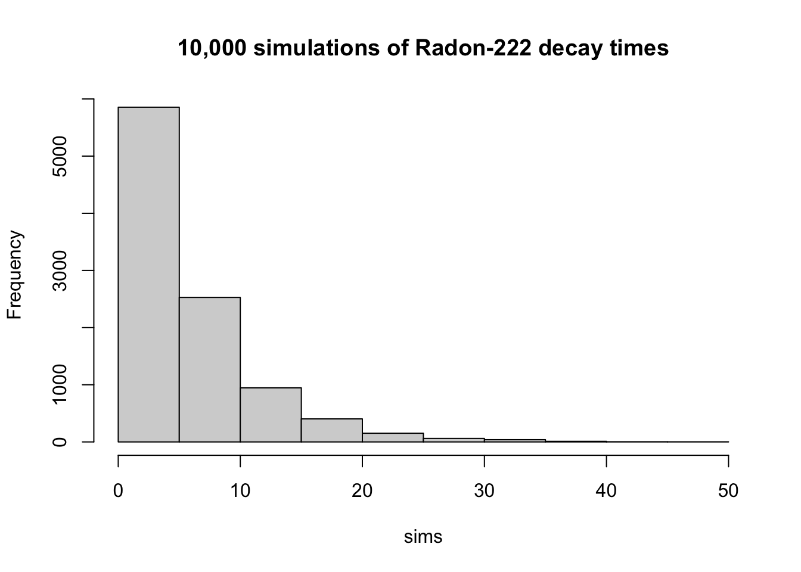
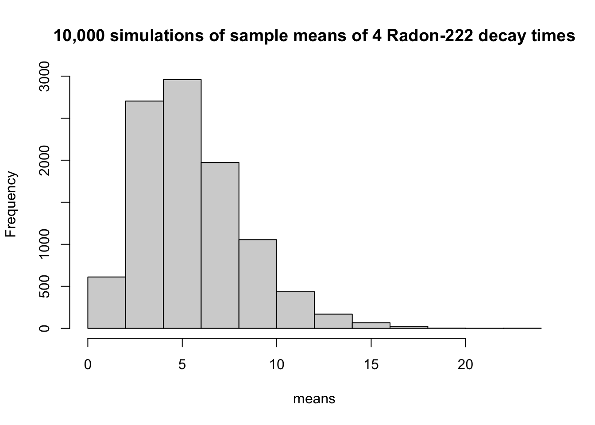
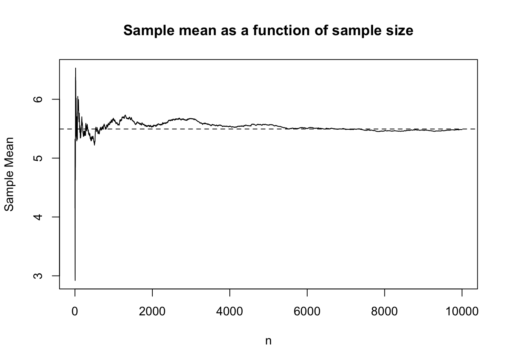
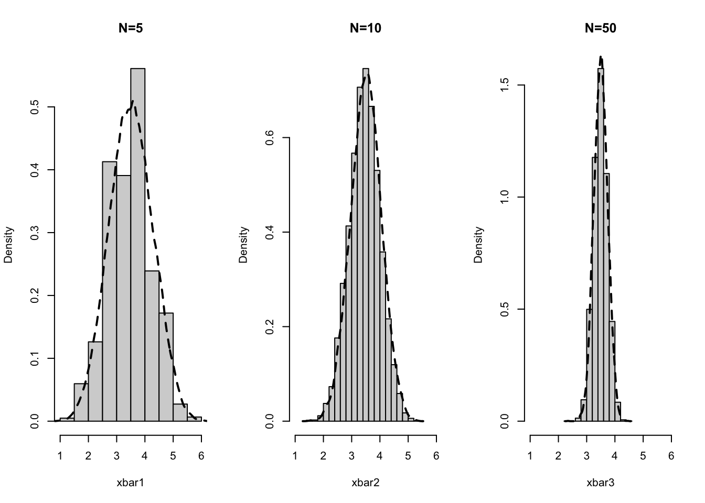
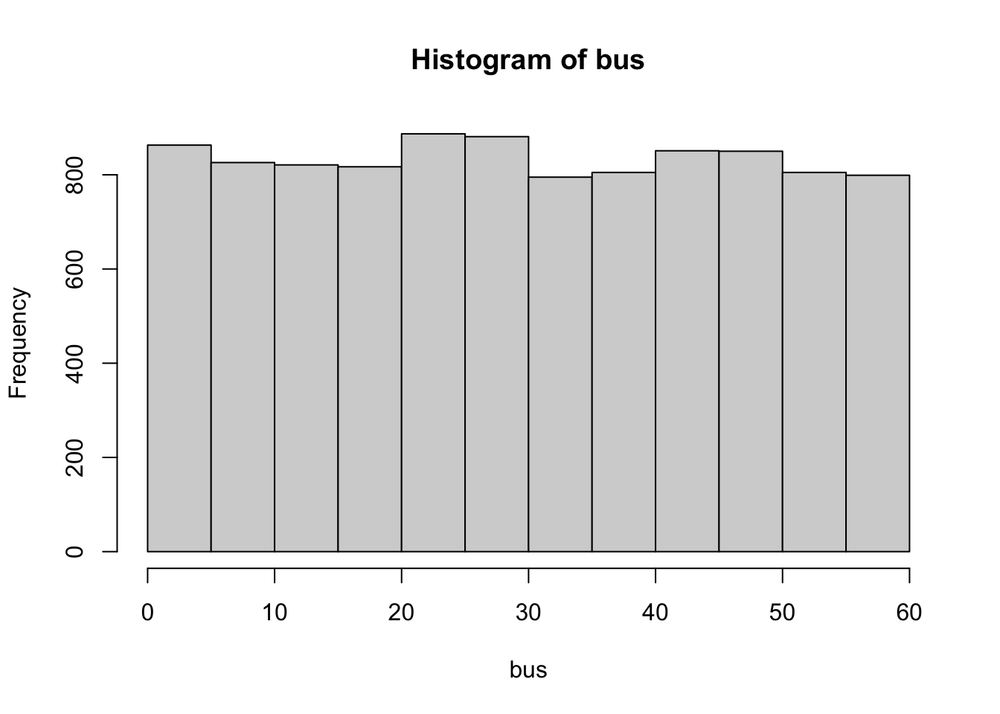
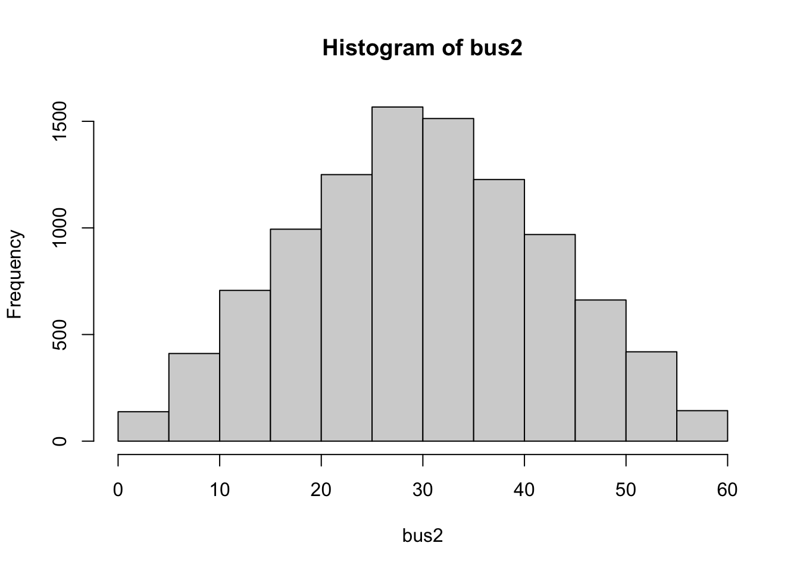
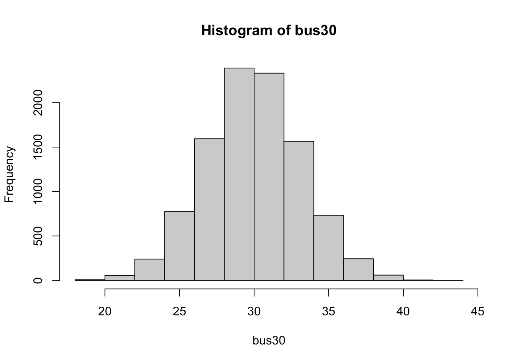

Chapter 6 Sampling Distributions, Central Limit Theorem, and Estimation
In this chapter, we will explore sampling distributions, focusing on the variability of sample statistics, which is crucial for inference. We will then dive into the Central Limit Theorem (CLT), which demonstrates how the distribution of sample means approaches normality as the sample size grows, forming the backbone of many statistical methods. The Law of Large Numbers (LLN) will also be discussed, showing how larger samples tend to provide more accurate estimates of population parameters. Finally, we will introduce point estimation, highlighting how to derive reliable population parameter estimates through sample data and discussing properties such as bias and standard error.
6.1 Statistics and Their Distributions
Definition 6.1 A statistic is any quantity whose value can be calculated from sample data.
Definition 6.2 The random variables \(X_1, X_2, \ldots, X_n\) are said to form a random sample of size \(n\) if \(X_i\) are independent and identically distributed (IID).
In chapter 1, we came across a few statistics. We can measure the center of a sample with the sample mean, \(\bar{x}\) and the sample median, \(\tilde{x}\). If we want to describe the spread of a sample, there are the sample variance (\(s^2\)) and sample standard deviation (\(s\)).
In fact, since each random sample could potentially be different, sample statistics have a probability distribution associated with them.
Example 6.1 Radon-222 has a half-life (median decay time) of 3.8 days and the the time between particles decaying can be modeled as an exponential(\(\lambda = 0.182\)) random variable. This random variable has a mean time of 5.5 days between decays.
- Simulate 10,000 Radon-222 decay times and plot the data as a histogram.
set.seed(2020)
sims = rexp(n=10000,rate=0.182)
hist(sims,main="10,000 simulations of Radon-222 decay times")
## [1] 5.574666## [1] 30.55352- Simulate four exponential(\(\lambda=0.182\)) random variables five times and calculate the sample mean of each sample.
set.seed(1)
sample1 = rexp(n=4,rate=0.182); mean1 = mean(sample1)
sample2 = rexp(n=4,rate=0.182); mean2 = mean(sample2)
sample3 = rexp(n=4,rate=0.182); mean3 = mean(sample3)
sample4 = rexp(n=4,rate=0.182); mean4 = mean(sample4)
sample5 = rexp(n=4,rate=0.182); mean5 = mean(sample5)| \(x_1\) | \(x_2\) | \(x_3\) | \(x_4\) | \(\bar{x}\) |
| 4.1493507 | 6.4925427 | 0.8005864 | 0.7681058 | 3.0526464 |
| 2.395981 | 15.906421 | 6.755835 | 2.965290 | 7.005882 |
| 5.255865 | 0.807945 | 7.641402 | 4.186977 | 4.473047 |
| 6.800020 | 24.307331 | 5.794193 | 5.688154 | 10.647424 |
| 10.307886 | 3.597509 | 1.851283 | 3.233405 | 4.747521 |
- Compute the mean and variance of the five sample means.
## [1] 5.985304## [1] 8.799113- Repeat the experiment 10,000 times, that is, simulate 10,000 samples of 4 exponential(\(\lambda=0.182\)) random variables. Create a histogram of the sample means and calculate the mean and variance of the sample means.
set.seed(2020)
nsims = 10000
means = rep(0,nsims)
simdata = rep(0,4)
for(i in 1:nsims){
simdata = rexp(n=4,rate=0.182)
means[i] = mean(simdata)
}
hist(means,main="10,000 simulations of sample means of 4 Radon-222 decay times")
## [1] 5.531811## [1] 7.719361- Simulate 10,000 exponential(\(\lambda=0.182\)) random variables and plot the sample mean as a function of sample size.
set.seed(1)
data = rexp(n=10000,rate=0.182)
means = cumsum(data) / seq_along(data)
plot(x=1:10000,y=means,type="l",xlab="n",ylab="Sample Mean",
main="Sample mean as a function of sample size")
abline(h = 1/.182,lty=2)
Theorem 6.1 The Law of Large Numbers states that there is a tendency for the sample mean, \(\bar{x}\), to approach the population mean, \(\mu\), as \(n \to \infty\).
Specifically, if \(|E[X]| = \mu < \infty\), then \(\lim_{n\to\infty} 1/n \sum_{n=1}^{\infty} x_i = \lim_{n\to\infty} \bar{x} = \mu\).
6.2 The Distribution of the Sample Mean
Example 6.2 Suppose a historical estimate of the half-life of Radon-222 was 6 days (with corresponding rate \(\lambda = 0.1155\)) which in turn has an expected value of 8.66 days. To test the accuracy of this claim, we measured the decay times for 50 Radon-222 particles and found a sample mean of \(\bar{x} = 5.67\) and sample variance of \(s^2 = 28.94\). Do we have enough information to reject the claim?
To answer this question, we need to know the distribution of \(\bar{X}\) and specifically, we would like to calculate the probability of observing such a sample mean assuming the historical estimate is accurate.
Theorem 6.2 Let \(X_1, X_2, \ldots, X_n\) be a random sample from a distribution with mean value \(\mu\) and standard deviation \(\sigma\) and let \(\bar{X} = \frac{1}{n} \sum X_i\). Then:
- \(E[\bar{X}] = \mu\)
- \(Var(\bar{X}) = \sigma_{\bar{X}}^2 = \frac{\sigma^2}{n}\)
- \(\sigma_{\bar{X}} = \frac{\sigma}{\sqrt{n}}\)
Example 6.3 Show that \(Var(\bar{X}) = \frac{\sigma^2}{n}\).
Definition 6.3 If \(\hat{\theta}\) is an estimator for \(\sigma\), then the standard error of \(\hat{\theta}\) is: \(SE(\hat{\theta}) = \sqrt{Var(\hat{\theta})}\). It is the magnitude of a typical or representative deviation between an estimate and the value of \(\theta\). If the standard error is a function of unknown parameters, then we can estimate it with the estimated standard error which is denoted \(s_{\hat{\theta}}\)
Example 6.4 If \(X_1, X_2, \ldots, X_{50}\) are iid Uniform[10,20] random variables, then determine \(E[\bar{X}]\) and \(SE(\bar{X})\).
Note: The symbol, \(\stackrel{\cdot}{\sim}\), stands for “approximately distributed as”.
Theorem 6.3 Central Limit Theorem: Let \(X_1, X_2, \ldots, X_n\) be a random sample from a distribution with mean \(\mu\) and variance \(\sigma^2\). If n is sufficiently large, \(\bar{X}\) has approximately a normal distribution with mean \(\mu_{\bar{X}} = \mu\) and variance \(\sigma_{\bar{X}}^2 = \sigma^2/n\). In other words, \(\bar{X} \stackrel{\cdot}{\sim} \mathcal{N}(\mu,\sigma^2)\).
This result is nontrivial and extremely useful! It allows us to determine how likely or unlikely a sample mean is if we are given a hypothesized population mean.
Illustration:
Example 6.5 Suppose that \(X_1, X_2, \ldots, X_{50}\) is a random sample from an exponential(\(\lambda = 0.1155\)) random variable (the historical claim). Determine the approximate sampling distribution of \(\bar{X}\).
Example 6.6 Class exercise (if time allows): We will collect data based on the following experiments. Plot a histogram for each instance.
- Roll your die once and record your number: \(\rule{1.5cm}{0.15mm}\)
- Roll your die twice and record the average of the two die rolls: \(\rule{1.5cm}{0.15mm}\)
- Roll your die ten times and record the average of the ten die rolls: \(\rule{1.5cm}{0.15mm}\)
Example 6.7 Simulate N fair die rolls 10,000 times. Here we will do the simulation for N=5, N=10, and N=50.
set.seed(2020)
xbar1 = rep(0,10000) # initialize this vector to zeros
xbar2 = rep(0,10000) # initialize this vector to zeros
xbar3 = rep(0,10000) # initialize this vector to zeros
# 10,000 simulated die rolls for N=5,10,50
for( i in 1:10000 ){
x1 = sample(1:6,5,replace=T)
xbar1[i] = mean(x1)
x2 = sample(1:6,10,replace=T)
xbar2[i] = mean(x2)
x3 = sample(1:6,50,replace=T)
xbar3[i] = mean(x3)
}
par(mfrow=c(1,3))
hist(xbar1,main="N=5",xlim=c(1,6),prob=TRUE)
lines(density(xbar1),lwd=2,lty=2)
hist(xbar2,main="N=10",xlim=c(1,6),prob=TRUE)
lines(density(xbar2),lwd=2,lty=2)
hist(xbar3,main="N=50",xlim=c(1,6),prob=TRUE)
lines(density(xbar3),lwd=2,lty=2)
Example 6.8 Suppose the decay time of Radon-222 follows an exponential distribution with \(\lambda = 0.1155\) decays/day (the historical claim). What is the probability that a random sample of 50 Radon particles results in a sample mean of less than 5.67 days/decay? Do you believe the historical claim?
Example 6.9 Suppose \(X_1, X_2, \ldots, X_{50}\) are iid Uniform[10,20] random variables. Determine the sampling distribution of \(\bar{X}\) and calculate \(P(\bar{X}<14)\).
6.3 Several General Concepts of Point Estimation
Definition 6.4 A point estimate of a parameter \(\theta\) is a single number that can be regarded as a sensible value for \(\theta\) and is often denoted with a hat (i.e., \(\hat{\theta}\)). A point estimate is obtained by selecting a suitable statistic and computing its value from the given sample data. The selected statistic, \(\hat{\theta}\), is called the point estimator of \(\theta\).
Example 6.10
\(\bar{X} = \frac{1}{n} \sum_{i=1}^n X_i\)
\(S^2 = \frac{1}{n-1} \sum_{i=1}^n (X_i -\bar{X})^2\)
Definition 6.5 The bias of a point estimator \(\hat{\theta}\) for a parameter \(\theta\) is defined as \(Bias[\hat{\theta}] = E[\hat{\theta}] - \theta\).
Definition 6.6 A statistic \(\hat{\theta}\) is called an unbiased estimator of the parameter \(\theta\) if \(E[\hat{\theta}] = \theta\).
Example 6.11 \(\bar{X}\) is an unbiased estimator for \(\mu\).
Example 6.12 Which of the following two estimators for \(\sigma^2\) is unbiased for \(\sigma^2\)?
- \(S^2 = \frac{1}{n-1} \sum_{i=1}^n (X_i -\bar{X})^2\)
- \(\gamma = \frac{1}{n} \sum_{i=1}^n (X_i -\bar{X})^2\)
Definition 6.7 The mean squared error (MSE) of an estimator \(\hat{\theta}\) of a parameter \(\theta\) is defined by \(E[(\hat{\theta} - \theta)^2] = Var + Bias^2\).
Typically, unbiased estimators are preferred though some advanced methods consider biased estimators that minimize MSE.
Example 6.13 Suppose \(X_1, X_2, \ldots, X_n\) are exponential(\(\lambda\)) random variables. Is \(\bar{X}\) an unbiased estimator for \(\lambda\)?
Example 6.14 Suppose \(X_1, X_2, \ldots, X_n\) are Poisson(\(\lambda\)) random variables. Is \(\bar{X}\) an unbiased estimator for \(\lambda\)?
6.4 Methods of Point Estimation
There are a variety of ways to obtain a point estimate. These methods include:
Method of Moments
Maximum Likelihood Estimation
Bayesian Estimation
While we won’t cover how these estimation methods are completed, we will compare different estimators. Each of these methods could produce a different point estimate.
Example 6.15 Suppose \(X_1, X_2, X_3\) are a random sample of \(\mathcal{N}(\mu=10,\sigma^2=4)\). Four estimators are given below. Determine if each estimator is unbiased and calculate its standard error. Which of the four estimators is preferred for estimating \(\mu\)?
\(\hat{Y_1} = \frac{X_1 + X_2 + X_3}{3}\)
\(\hat{Y_2} = \frac{X_1}{2}+\frac{X_2}{4}+\frac{X_3}{4}\)
\(\hat{Y_3} = X_1\)
\(\hat{Y_4} = \frac{X_1+X_2+X_3}{2}\)
6.5 R Companion for Chapter 6
Example 6.16 What does the distribution of the sample means of independent (continuous) uniform random variables look like? The Central Limit Theorem tells us that for a large sample size, the distribution of such means will be approximately normally distributed. Let’s see this in action.
Suppose we know a bus arrives once per hour at a designated stop but we don’t know when the next bus is and we don’t know when the last bus came. We will model this as a continuous uniform[0,60] random variable. In other words, the next bus could come in anywhere from 0 to 60 minutes with all possibilities being equally likely. In the code below, we simulate 10,000 uniform[0,60] random variables and look at the histogram of results.

The mean and variance of this sampling distribution is calculated below.
## [1] 29.79179## [1] 298.1569From chapter 4, we know that if \(X \sim Uniform[a,b]\), then \(E[X] = \frac{b+a}{2}\) and \(Var(X) = \frac{(b-a)^2}{12}\). For a uniform[0,60] random variable, we get the theoretical values of \(E[X] = \frac{60+0}{2}=30\) and \(Var(X)=\frac{(60-0)^2}{12}=300\). Our simulated values are very close to these theoretical values.
Now, let’s suppose we have to wait for two buses, each being modeled as an independent uniform[0,60]. Let’s look at the sampling distribution for the mean of the two bus wait times.
set.seed(2020)
bus2 = rep(0, 10000) # initialize this vector to zeros
# 10,000 simulations of 2 bus waits
for (i in 1:10000){
x1 = runif(2,0,60) # n=2
bus2[i] = mean(x1)
}
mean(bus2)## [1] 29.90972## [1] 149.6154
Notice that the average of two bus waits is no longer uniform and instead has more of a triangular shape. Our simulations of two bus waits had a mean of 30.05955 and variance of 151.2226. From chapter 6, we know that \(E[\bar{X}]=\mu\) and \(Var(\bar{X})=\frac{\sigma^2}{n}\).
For this simulation, the theoretical values for these quantities are \(E[\bar{X}]=\mu=30\) and \(Var(\bar{X})=\frac{\sigma^2}{n}=\frac{300}{2}=150\). Again, our simulations give values very close to the theoretical values.
Finally, let’s suppose that we repeat the experiment for 30 days straight and look at the distribution of sample means of 30 days. We will simulate these 30 day periods 10,000 times.
set.seed(2020)
bus30 = rep(0, 10000) # initialize this vector to zeros
# 10,000 simulations of 2 bus waits
for (i in 1:10000){
x2 = runif(30,0,60) # n=30
bus30[i] = mean(x2)
}
mean(bus30)## [1] 29.97879## [1] 10.19619
Our simulations of 30 bus waits had a mean of 30.00598 and variance of 10.08975. The theoretical values for this simulation are \(E[\bar{X}]=\mu = 30\) and \(Var(\bar{X})=\frac{\sigma^2}{n} = \frac{300}{30}=10\).
Notice that the distribution of sample means is narrower for n=30 than n=2 and the variance is lower when a larger sample size is used. Also note that the distribution is somewhat bell-shaped.
In the coming chapters on Inferential Statistics, we will use the fact that the Central Limit Theorem states that the sampling distribution of sample means is approximately normally distributed.